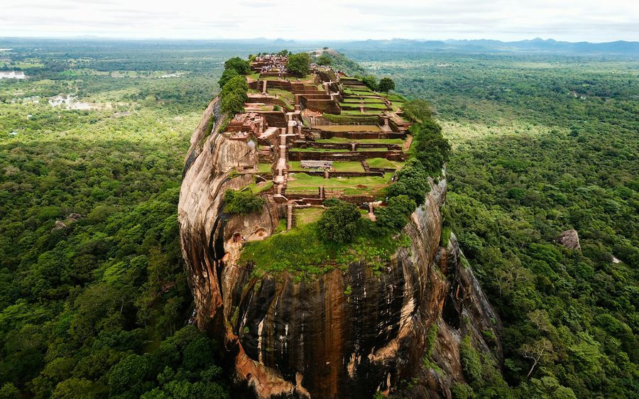

1Sigiriya Rock Fortress
King Kashyapa built his palace on top of this rock in the 5th century and a UNESCO World Heritage Site grew around it. The way up passes the water gardens, the painted ladies of the frescoes, the Mirror Wall with 1,000-year-old graffiti, and the two giant Lion’s Paws before the last metal stairs to the summit. The museum by the ticket office is covered by your ticket — do it after, when you’re back in the shade.
From townAt the ticket office in the village
OpenCounters 7 AM–5 PM · single entry
Give it3 hours with the museum
EffortModerate · about 1,200 steps
TicketUSD 35 foreign adult · USD 20 age 6–12 · paid in rupees
From our driversBe at the counter when it opens. By ten the rock is hot to touch, the stairs are queued and the climb takes twice as long. Keep quiet near the Lion’s Paw — the hornets there don’t like noise or perfume, and staff will stop the climb if they’re restless. No photos of the frescoes; the guards mean it.
Early pickup with Ceylon HopFrom your hotel to the counter at opening timeAsk for a price →